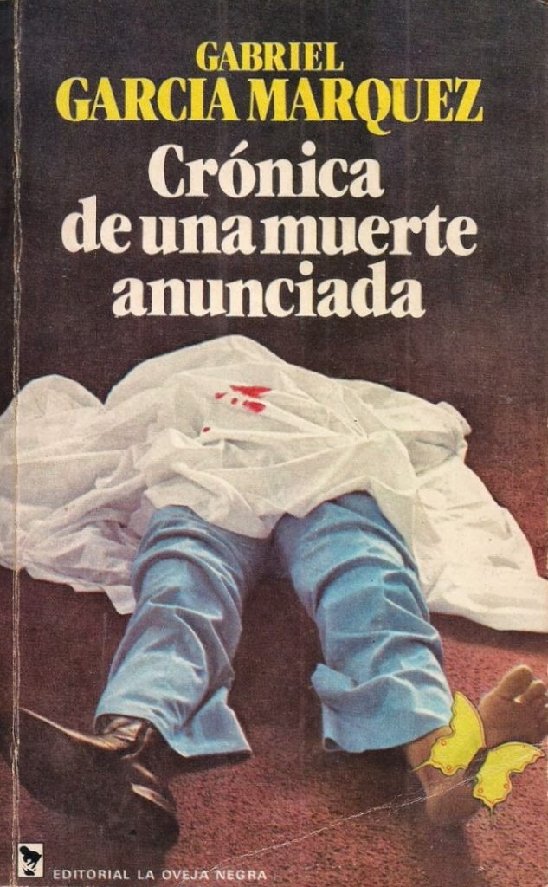

Crónica de una muerte anunciada es una novela del escritor colombiano Gabriel García Márquez, publicada por primera vez en 1981. Fue incluida en la lista de las 100 mejores novelas en español del siglo XX del periódico español El Mundo.1 La novela representó un acercamiento entre lo periodístico, lo narrativo, y una aproximación a la novela policial. La historia contada se inspira en un suceso real, ocurrido en 1951 en el Municipio de Sucre, ubicado al sur del Departamento de Sucre, en Colombia , del que el autor tomó la acción central (el crimen), los protagonistas, el escenario y las circunstancias, alterándolo narrativamente, pero sin descuidar nunca los datos y las precisiones obligadas en toda crónica periodística.
En un pequeño y aislado pueblo en la costa del Caribe, se casan Bayardo San Román, un hombre rico y recién llegado, y Ángela Vicario. Al celebrar su boda, los recién casados se van a su nueva casa, y allí Bayardo descubre que su esposa no es virgen. Inmediatamente, Bayardo devuelve a Ángela Vicario a la casa de sus padres donde es golpeada por su madre e interrogada por sus hermanos, Ángela culpará a Santiago Nasar, un vecino del pueblo. Los hermanos Vicario –Pedro y Pablo–, obligados por la defensa del honor familiar, anuncian a la mayoría del pueblo que matarían a Santiago Nasar. Este no se entera, sino minutos antes de morir. Los hermanos matan a cuchillazos a Santiago, después de pensarlo en varias ocasiones, en la puerta de su casa, a la vista de la gente que no hizo o no pudo hacer nada para evitarlo. Pasados 27 años, el amigo de Santiago (el narrador) reconstruye los hechos, de los que él fue testigo, en forma de crónica, combinando narración y testimonios. Años después, Ángela Vicario estaría escribiendo cada día a Bayardo, primero formalmente, después con cartas de joven enamorada y, al final, fingiendo enfermedades. Así, Bayardo vuelve 17 años después, claramente desmejorado y con todas las cartas sin abrir.
Una característica del libro es la extensa cantidad de personajes, debido a que, al ser un pueblo pequeño, todos en él tuvieron participación directa o indirecta, o mención en la historia. Es didáctico con el personaje y de gran fracasó Hay un personaje colectivo que es el pueblo, del pico que conoce de manera anticipada la muerte de Santiago y no hace nada por evitarla.
Santiago Nasar, hombre de 21 años que abandona los estudios de secundaria cuando su padre fallece y tiene que actuar como padre de familia y dirigir el Divino Rostro, una hacienda que su padre le dejó en herencia. Es un personaje soñador, alegre, pacífico de corazón fácil, una persona con la que se podía hablar, bello, formal y creyente. Tenía un cierto talento casi mágico para los disfraces. Ángela Vicario, es la menor en su familia, no creyente, muy recatada respecto a los hombres, sabía lo que hacía en cada caso. Maduró después de lo ocurrido y se vuelve ingeniosa. Aunque nadie le pudo sacar nada de lo que pasó aquella noche ni qué pasó con Santiago, la versión más corriente, era que Ángela estaba protegiendo a alguien a quien amaba de verdad. Muy indecisa a la hora de tomar decisiones por sí misma ya que sus padres le impusieron su novio. Tenía un aire desamparado. Bayardo San Román, ingeniero de trenes cuya edad ronda los treinta años. Bien vestido, galán con las mujeres, persona con la que se puede hablar, culto. Sabía mandar mensajes por código morse y era buen nadador. Por lo que parecía con dinero y le gustaba mucho las fiestas ruidosas y largas, de buen beber y enemigo de los juegos de manos. Es honrado y de buen corazón.
Ibrahim Nasar. Árabe y difunto padre de Santiago Nasar. Se hace notar que él hablaba en árabe con su hijo, el cual le respondía en árabe también, cuando lo normal en la tercera generación de los árabes que habían llegado a ese pueblo (generación a la que pertenece Santiago) era que respondiesen en castellano aunque se dirigiesen a ellos en su idioma. Tuvo un amor secreto con Victoria Guzmán y abusó de ella. Enseñó a su hijo el valor y la prudencia. Estaba interesado en los caballos y aves de presa altas. Compró un depósito que estaba en desuso y lo convirtió en una casa para vivir.
Victoria Guzmán. Cocinera de la familia de Santiago Nasar. Antes de ser la cocinera, fue amante de Ibrahim Nasar. Divina Flor. Hija de Victoria Guzmán. Sabe que tarde o temprano será la amante —lo quiera o no— de Santiago Nasar y que su madre la protege para que no se la lleven a la cama. El obispo. Aborrece el pueblo, al punto de pasar en su buque frente él, sin bajarse. Aparece justo el día en que Santiago muere. Plácida Linero. La madre de Santiago Nasar. Su hijo es asesinado en la puerta principal de su propia casa, tras que su madre la cerrara pensando que este se encontraba en su interior.
Luisa Santiaga. Madre del narrador, y por tanto de Margot, Luis Enrique y Jaime ; madrina de bautismo de Santiago Nasar, en honor a quien este fue nombrado. Pedro Vicario. Hermano de Ángela Vicario, gemelo de Pablo Vicario. Toma la iniciativa de matarlo, aunque no estén muy convencidos. Tiene 24 años. Pablo Vicario. Hermano de Ángela Vicario, gemelo de Pedro Vicario. Es menos convencido de matar a Santiago Nasar. Se casa con Prudencia Cortes después de salir de la cárcel... Cristo Bedoya. Amigo de Santiago Nasar, lo acompañó durante la boda de Ángela Vicario, celebrada la noche antes de su asesinato. En la mañana después de la boda, Cristóbal perdió de vista a Santiago durante unos minutos, en los cuales se enteró de los planes de los hermanos Vicario de asesinarlo. Cristóbal busca a Santiago en su casa, para advertirle, pero no le encuentra. Al final un grupo de personas pide su ayuda como médico, lo cual le impide defenderlo de su muerte. Margot. Hermana del narrador, estaba enamorada de Santiago.
La novela se presenta como la reconstrucción de una historia: un narrador en primera persona y testigo de algunos hechos asume, años después del amargo suceso, la función del investigador para reconstruir la historia mediante informes, cartas, testimonios diversos y su memoria (pues él mismo estuvo en el pueblo el día de la boda). El punto de vista desde el que se narra la historia es cambiante, hay multi-perspectivismo, en tanto que la visión de los hechos se presenta no solo desde el punto de vista del narrador, sino también de los demás personajes (protagonistas y testigos de los hechos). A veces coinciden, pero en otras ocasiones se contradicen; la historia se presenta, entonces, como ambigua, llena de dudas, sobre todo en lo que se refiere a quién 'deshonró' a Ángela o, por ejemplo, el clima del día, que varía de ser lluvioso y nublado a ser de un soleado cegador, según los testimonios. El narrador presenta la historia dividida en cinco partes (cada una de las cuales desarrolla temas concretos y gira alrededor de los diferentes protagonistas) alterando la ordenación de los hechos y su ordenación temporal. El tiempo fluye de forma alineal, circular y caótico, consiguiéndose a través de anticipaciones, retrocesos, reiteraciones, superposiciones, elipsis, etc. El resultado es una especie de 'rompecabezas'. La novela presenta una estructura cerrado-circular: la muerte de Santiago a manos de los Vicario, anunciada súbitamente en las primeras líneas, es el motivo narrativo que, con pormenorizado y macabro tratamiento, cierra también la historia. La novela presenta abundantes diálogos (fragmentarios y breves, y en estilo directo normalmente, con lo que se logra cortar el ritmo narrativo, introduciendo variedad en la narración y en el estilo) y fragmentos descriptivos (de objetos, personajes, escenarios, ambientes). Lo estrictamente narrativo se reduce a pasajes breves, recurrentes, que, en muchas ocasiones, están enmarcados dentro de descripciones.